Next: Tools for Feedback LTI Up: ltitool_manual Previous: Conclusions Contents Index
Consider the closed loop system given by Fig. 4.1.
The closed loop system given by Fig. 4.1 can be redrawn as presented in Fig. 4.2 for a setpoint change where, according to Adam [1, see Chap. 9], if 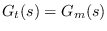 the feedback system has a similar behavior that a unity feedback system and consequently it is possible to write, 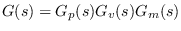 y H(s)=C(s).
For the stability study, remember that it must take into account (Adam, [1]):
In this toolbox version, two tools have been developed to allow studying of stability by mean of the root locus and Bode and Nyquist stability criteria.
Example 3.1. Firstly, consider a unity feedback system whose transfer function is presented in Fig. 4.3, with a PI controller where 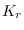 is a variable gain and 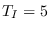.
The open loop transfer function, G(s)H(s) results,
where for this particular case 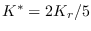.
For this example, the closed loop transfer function results,
To study the stability of the feedback system, the Routh stability criterion will be apply based on the characteristic equation of feeback loop system.
Being the characteristic equation of this example, 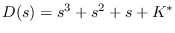 and therefore the Routh array results
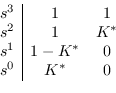
It follows that the system will be asymptotically stable if and only if, 0 < K* < 1.
Now it is pretended to study the initial and final values reached for a step change in the setpoint R(s) = k/s. To do this, applying the initial value theorem (IVT),
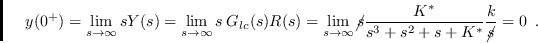
Then, applying the final value theorem (FVT), 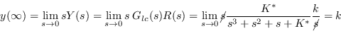
From the results of both theorems it is shown that the system starts from zero and reaches the setpoint value. This result is subject to the system being stable in closed loop; this is, 0 < K* < 1.
Now adopting K* = 0.5 (o sea Kr = 1.25) to reach a GM = 2, the characteristic closed loop equation results
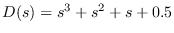 presenting three poles in 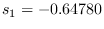 y
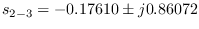.
Note that both systems do not have zeros.
These results can be easily obtained with the Octave commands,
pkg load control
% G(s)H(s) transfer function
Kast=0.5;
s=tf('s');
GH=Kast/(s*(s^2+s+1));
% G(s)H(s) Poles-Zeros
polesGH=roots(GH.den{1,1})
% Closed loop Poles-Zeros
Gcl=feedback(GH,1)
polesGcl=roots(Glc.den{1,1})
where the answer in the Octave command window is,
polesGH = -0.50000 + 0.86603i -0.50000 - 0.86603i 0.00000 + 0.00000i Transfer function 'Glc' from input 'u1' to output ... 0.5 y1: ------------------- s^3 + s^2 + s + 0.5 Continuous-time model. polesGcl = -0.17610 + 0.86072i -0.17610 - 0.86072i -0.64780 + 0.00000i
The feedback system step response can be obtained by means of the following Octave command:
% Step response step(Glc)that it shown in Fig. 4.4.